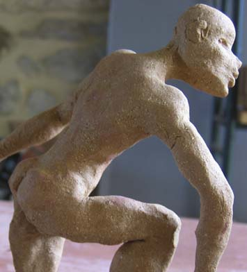
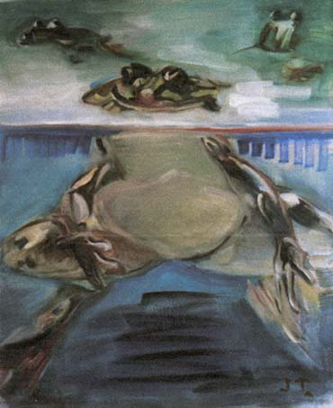

L’EAU D’ICI , L’EAU
(-) DE (-) LA (?)
Donc en un mot, pas de CAHORS ni de BOURGOGNE sur mon « étal »
d’artiste. Mais de simples bouteilles d’eau minérale. En plastique
et vides!
Oui, d’habitude, les artistes expriment plutôt, par la plénitude
des formes et des couleurs, la plénitude des sentiments : le plaisir,
la jubilation, l’amour… le bonheur en général. Mais
voilà, nous avons choisi le thème de « l’eau aujourd’hui
» .Et la situation n’est pas enthousiasmante.
{...}
Un chiffre : dans le monde, 1000 000 000 de personnes n’ont pas d’eau
potable !
SECOUEZ-MOI, SECOUEZ-MOI.
C’est le nouveau jeu que je vous propose. Pas question de céder
à la morosité ni de sacrifier aux délires de la création
et de la critique artistiques. Ces «HYDROMOBILES »secs attendent
d’être libérés par vos mains expertes (et délicates
). Chaque création vous transformera, après coup, en écotouriste
averti et vous entraînera dans une ronde visuelle et acoustique à
travers :
• la géographie : l’amer d’ARAL », « le plateau
du LASSITI », « mirage à TOZEUR ».
• le temps avec des pratiques jugées aujourd’hui ancestrales
par les occidentaux - « l’eau du puits », « la porteuse
d’eau ».
• la flore et la faune - « belle de jour », « escargot
de Bourgogne ».
Tout
lire >>>>

{...}
Jean m’expliqua qu’il travaillait à la mise en situation
dans ses toiles d’une bouée « monstre du loch » en
plastique, utilisée par les enfants qui ne savent pas nager. Il veut
parler de l’aversion ou de la joie à la première approche
de l’élément liquide. Cette bestiole, composée de
plastique dans les couleurs vert, bleu, rose, mauve, aux antipodes du matériel
que j’emploie d’ordinaire me laissait tout d’abord méditative.
Après réflexion, j’ai pensé que c’était
l’occasion d’aborder des couleurs et des matériaux différents.
La quête : bande 3D de Pascale Bas
C’est la réalisation d’une bande en volume qui conte, raconte
à travers la reconstitution de l’atelier du peintre Jean Thirion,
la quête de l’eau d’un intrus. Tout commence à l’extérieur
où sont accrochés des puits sans fond où des femmes puisent
le vide… Deux hommes aux allures de Peuhl gardent leurs troupeaux, le
regard dédaigneux et fier. Là, ils ne mènent rien, juste
un air de Christ en croix.
L’intrus, juché sur un radeau, se hisse et s’introduit de
manière illicite par la fenêtre jusque dans l’atelier. Parmi
les toiles, il cherche en grimpant, sautant, avançant laborieusement,
il voit le monstre du loch, au milieu de la pièce, il construit {...}
Tout
lire >>>>
Pascale BAS
320 rue Nationale - 46000 CAHORS
05 65 20 21 59 - daniel.bas3@quinze-donadieu.org
CONFLUENCE AQUATIQUE
du 1er au 10 juin 2007
• Le Garage Donadieu •